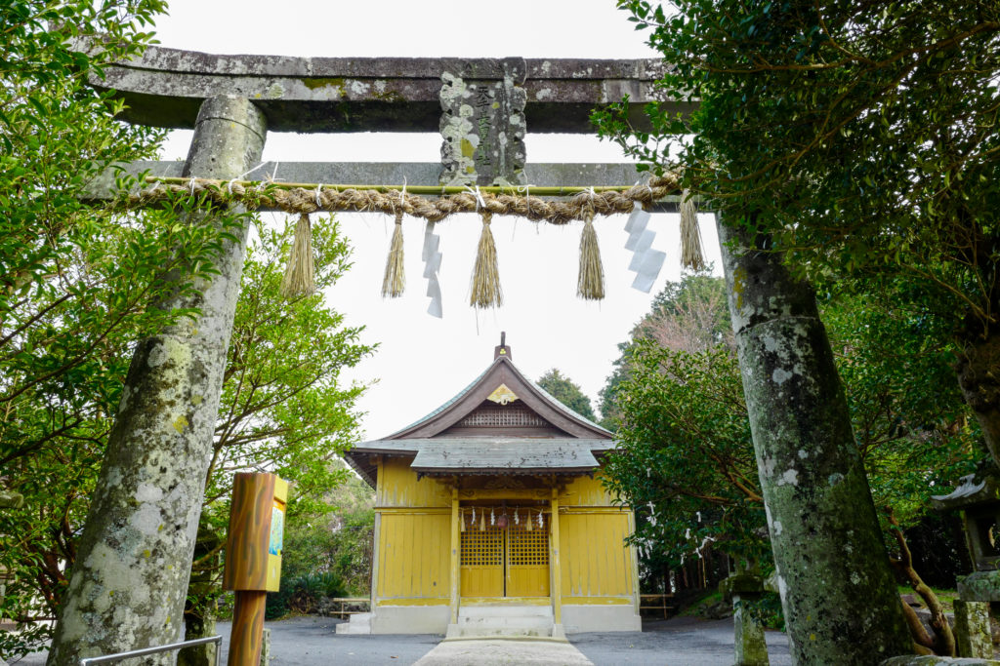

天手長男神社（Amanotanagao-jinja）

住所
〒811-5117
長崎県壱岐市郷ノ浦町田中触730
旧国名
壱岐国一宮
御祭神
天忍穂耳尊（あめのおしほみみのみこと）・天手力男命（あまのたながおのみこと）・天鈿女命（あめのうずめのみこと）
天手長男神社について
『宗像大菩薩御縁起』によると、神功皇后の三韓征伐に際し、宗大臣（宗像大社の神）が「御手長（おたなが）」という旗竿に武内宿禰（たけうちのすくね）が持っていた紅白2本の旗をつけ、
（これを上げ下げして敵を翻弄し、最後に息御嶋（宗像の沖ノ島）にこの「御手長」の旗を立てたといわれています。
天手長男（あまのたながお）・天手長比賣（あまのたながひめ）の社名はこの「御手長」に由来するといいます。
境内は、小高い丘の上にあり石段を登ると素朴な社殿が建ちます。式内名神大社の「天手長比賣神社」、式内小社の「物部布都神社（もののべふつじんじゃ）」を合祀しています。
お祭り
『例祭・その他』・・毎年10月13日に行われています。神幸式、大神楽、大神楽奉奏があります。また、特殊神事として12月16日の報賽祭では神楽が舞われます。
さらに6月16日には、玄界灘の絶海に浮かぶ島らしく風止五穀成就祈願祭が行われます。